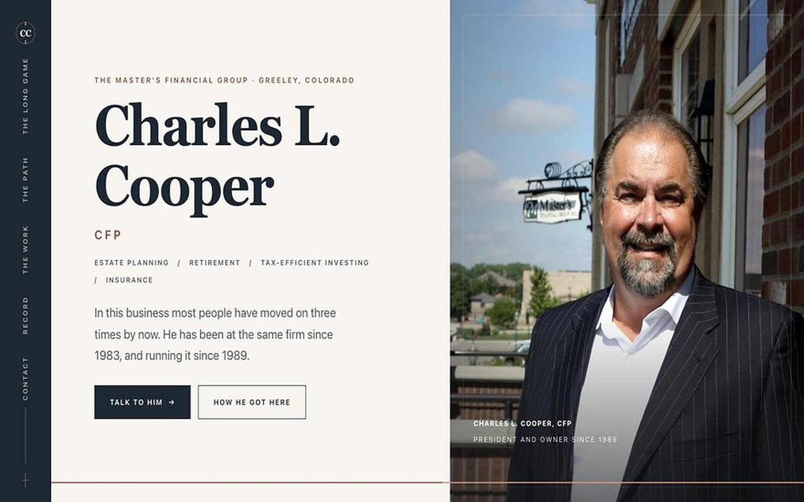

Charles L. Cooper
CFP · Financial planner
Commissioned by Charles L. Cooper
The decision
Make four decades of continuity the story, not a footnote.
Why I built it this way
Tenure reads as unremarkable until you set it against an industry where advisers move every few years. The disclosures a regulated adviser has to carry are built into the structure rather than bolted to the end.
